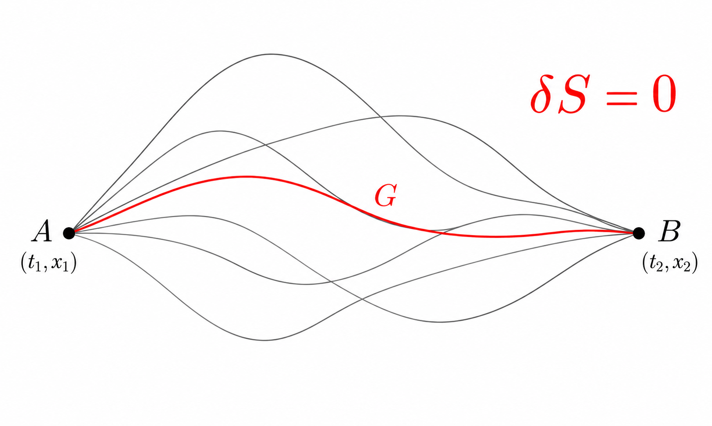

![This animation shows the events that serve as the basis of an astrophysics technique called "echo mapping," also known as reverberation mapping. At center is a supermassive black hole surrounded by a disk of material called an accretion disk. As the disk gets brighter it sometimes even releases short flares of visible light. Blue arrows show the light from this flash traveling away from the black hole, both toward an observer on Earth and toward an enormous, doughnut-shaped structure (called a torus) made of dust. The light gets absorbed, causing the dust to heat up and release infrared light. This brightening of the dust is a direct response to — or, one might, say an "echo" — of the changes happening in the disk. Red arrows show this light traveling away from the galaxy, in the same direction as the initial flash of visible light. Thus an observer would see the visible light first, and (with the right equipment) the infrared light later. Astronomers have previously proposed using echo mapping as a means of measuring distances to cosmic objects. If scientists can observe both the initial flare of visible light and the subsequent infrared brightening in the dust, they could in theory use that information to measure the disk's luminosity, which could then be used to measure the distance to that galaxy by comparing it to the galaxy's brightness as seen from Earth. The temperature in the part of the disk closest to the black hole can reach tens of thousands of degrees but decreases with distance. When it reaches about 2,200 degrees Fahrenheit (1,200 Celsius), it is cool enough for dust to form. The more luminous the disk, the farther away from it the dust forms and the longer it takes light from the disk to reach the dust and produce the "echo." The distance from the accretion disk to the inside of the dust doughnut can be billions or trillions of miles. Even light, traveling at 186,000 miles (300,000 kilometers) per second, can take months or years to cross it. NASA's Near Earth Object Wide Field Infrared Survey Explorer (NEOWISE), previously named WISE, surveys the entire sky about once every six months and is on track to complete 16 such surveys by the end of 2020, providing astronomers with repeated opportunities to observe galaxies and look for signs of those light echoes. A study using data from WISE measured the luminosity of over 500 black hole accretion disks using echo mapping, but the subsequent distance measurements lacked precision compared to other distance measuring techniques. Additional data and an improved understanding of dust torus dynamics could improve those measurements. Movie available at https://photojournal.jpl.nasa.gov/catalog/PIA23866](http://images-assets.nasa.gov/image/PIA23866/PIA23866~orig.jpg)
![This two-panel illustration shows a black hole surrounded by a disk of gas, before and after the disk is partially dispersed. In the left panel, the ball of white light above the black hole is the black hole corona, a collection of ultra-hot gas particles that forms as gas from the disk falls into the black hole. The streak of debris falling toward the disk is what remains of a star that was torn apart by the black hole's gravity. The right panel shows the black hole after the debris from the star has dispersed some of the gas in the disk, causing the corona to disappear. https://photojournal.jpl.nasa.gov/catalog/PIA23864](http://images-assets.nasa.gov/image/PIA23864/PIA23864~orig.jpg)
![This artist's concept shows a black hole with an accretion disk -- a flat structure of material orbiting the black hole -- and a jet of hot gas, called plasma. Using NASA's NuSTAR space telescope and a fast camera called ULTRACAM on the William Herschel Observatory in La Palma, Spain, scientists have been able to measure the distance that particles in jets travel before they "turn on" and become bright sources of light. This distance is called the "acceleration zone." https://photojournal.jpl.nasa.gov/catalog/PIA22085](http://images-assets.nasa.gov/image/PIA22085/PIA22085~orig.jpg)
![When two black holes collide, they release massive amounts of energy in the form of gravitational waves that last a fraction of a second and can be "heard" throughout the universe - if you have the right instruments. Today we learned that the #LIGO project heard the telltale chirp of black holes colliding, fulfilling Einstein's General Theory of Relativity. NASA's LISA mission will look for direct evidence of gravitational waves. <a href="http://go.nasa.gov/23ZbqoE" rel="nofollow">go.nasa.gov/23ZbqoE</a> This video illustrates what that collision might look like.](http://images-assets.nasa.gov/image/GSFC_20171208_Archive_e000415/GSFC_20171208_Archive_e000415~orig.jpg)
![Top: An illustration of NASA's Nuclear Spectroscopic Telescope Array, or NuSTAR, in orbit. The unique school bus-long mast allows NuSTAR to focus high energy X-rays. Lower-left: A color image from NASA's Hubble Space Telescope of one of the nine galaxies targeted by NuSTAR in search of hidden black holes. Bottom-right: An artist's illustration of a supermassive black hole, actively feasting on its surroundings. The central black hole is hidden from direct view by a thick layer of encircling gas and dust. http://photojournal.jpl.nasa.gov/catalog/PIA19348](http://images-assets.nasa.gov/image/PIA19348/PIA19348~orig.jpg)
1Lagrange's equation for a single variable
The physical trajectory of a system between two fixed endpoints is the path for which the action is stationary,
where the action is defined by
And from the principle of least action, the equation of motion are given by:

Under the variation
the action changes by
Since variation and differentiation commute,
Therefore,
Integrating the second term by parts gives
Because the endpoint variations vanish,
the boundary term is zero. The remaining variation must vanish for arbitrary \(\delta q(t)\), so the coefficient of \(\delta q\) must vanish:
Hence the Euler-Lagrange equation is
2Lagrange's equation for multiple variables
The single-variable Euler-Lagrange equation can be extended naturally when the Lagrangian depends on several independent dynamical variables. Consider two independent fields \(u(x,y)\) and \(v(x,y)\), with the action
where
and the Euler-Lagrange equation are given by:
Consider the variations
The variation of the action is
Assuming that the variations vanish on the boundary of \(G\), all boundary terms disappear. The variation becomes
Because \(\delta u\) and \(\delta v\) are independent and arbitrary in the interior of \(G\), each coefficient must vanish separately. We therefore obtain two Euler-Lagrange equations:
and
Thus, each independent field contributes its own Euler-Lagrange equation. This is the key step toward electromagnetism: the electromagnetic potential will be treated as a collection of field components, each of which is varied independently.
2.1The 4-vector generalization
Let the dynamical field be a vector \(a^\mu(x)\), with spacetime coordinates \(x^\nu\). Consider the action (note that Einstein-convention is implied everywhere)
The Euler-Lagrange equations are given by:
We vary the vector field according to
The variation of the action is therefore
Because variation commutes with differentiation,
Therefore,
Integrating the second term by parts gives
For variations satisfying \(\delta a^\mu=0\) on the boundary, the boundary term vanishes. Hence
Since the components \(\delta a^\mu\) are arbitrary and independent, we obtain the generalized Euler-Lagrange equation
This is the vector-field generalization of the Euler-Lagrange equation. It is simply the several-field equation written compactly, with the component label \(\mu\).
3Maxwell's equations
The electromagnetic fields are governed by the four Maxwell equations:
These four equations, together with the appropriate charge and current distributions \(\rho\) and \(\mathbf J\), completely specify the dynamics of the electric and magnetic fields. They are empirical laws: their form is based on experimental observations and on the laws established by Gauss, Faraday, Ampère, and others. Maxwell unified these results into a single system and introduced the displacement-current term in the fourth equation.
The scalar potential \(\phi\) and the vector potential \(\mathbf A\) can be combined into a single four-vector, the electromagnetic potential four-vector. Using \(x^0=ct\), we define
Thus the temporal component of \(A^\mu\) contains the scalar potential, while the three spatial components are the components of the vector potential. With \(A^0=\phi/c\), we have \(\phi=cA^0\), and since \(x^0=ct\), differentiation with respect to time is \(\partial_t=c\partial_0\). Before introducing any new tensor, we can simply rewrite the electric and magnetic fields directly using these components.
3.1Electric field in terms of the 4-potential
Starting from
we use
Therefore,
Writing the spatial components explicitly,
Hence, for \(i=1,2,3\),
3.2Magnetic field in terms of the 4-potential
Now consider
In components,
Since
these three equations can be written compactly as
where \(\epsilon_{ijk}\) is the three-dimensional Levi-Civita symbol.
At this stage we have already expressed both \(\mathbf E\) and \(\mathbf B\) entirely in terms of derivatives of the four-potential. The expressions also show a useful pattern: the electric field involves the temporal component \(A^0\) and a spatial component \(A^i\), while the magnetic field involves two spatial components. We can package all of these combinations into a single antisymmetric four-dimensional object.
Define the electromagnetic field-strength tensor
For the metric convention \(\eta^{\mu\nu}=\operatorname{diag}(1,-1,-1,-1)\), the time-space components become
Comparing with the expression obtained above,
The purely spatial components contain the magnetic field. Since
we obtain
Using
the spatial components can therefore be written as
Contracting with \(\epsilon_{ijk}\) gives
Hence both electromagnetic fields are contained in the derivatives of the potential four-vector: the electric field comes from the time-space components of \(F^{\mu\nu}\), while the magnetic field comes from its purely spatial components. The four-potential is not unique: a gauge transformation \(A^\mu\rightarrow A^\mu+\partial^\mu\Lambda\) leaves \(\mathbf E\) and \(\mathbf B\) unchanged.